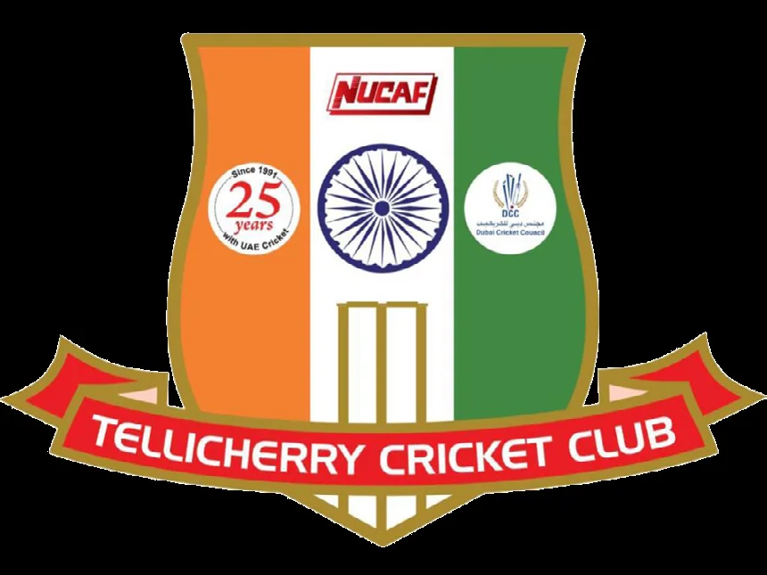

Tellicherry Cricket Club was established in Dubai in the late 1980s by a group of passionate cricketers, first-class and state-level players living in the UAE. The academy is the club's centre of excellence: strengthening the game, and the character, of every player who trains here.
The objective, in the club's own words: excellent cricketers & first-class citizens.
What began as a club founded by first-class and state-level cricketers has grown into one of the UAE's leading academies. Today, Cricketers Academy is headquartered at Shabab Al Ahli Stadium in Al Nahda, Dubai, and is registered under the Dubai Cricket Council.
We train more than 275 players, around 250 boys and 25 girls, from age six to twenty, across ten age-group squads, with our players averaging 30 competitive matches a season against academies across the UAE. We work closely with the Emirates Cricket Board and with state associations in India to take budding cricketers to district, state, and national level.
The academy hasn't grown by accident. It's grown because the results speak.
Current and former first-class cricketers regularly visit the academy to spend time with our players and share what the game looks like from the inside. For a twelve-year-old working on their cover drive, hearing it from someone who has played at that level changes what feels possible.
It's part of how we coach confidence, not just technique.

Shortcuts in technique cost players years of frustration later. We take time to build the right foundations, even when it means slowing down.
We coach focus, resilience, and game awareness as deliberately as we coach batting or bowling. The players who last are the ones who can perform under pressure.
Parents should be able to see what their child is working on and how they're improving. We communicate, we report, and we hold ourselves accountable.
The academy is based at Shabab Al Ahli Stadium in Al Nahda, Dubai: practice nets, an open ground, and a conditioning setup, with sessions running every day except Mondays, all year round. Weekend mornings and evenings, weekday evenings.
All equipment is provided for trial sessions. Players who enrol are advised on kit as part of onboarding.
Book a free 60-minute trial session at Shabab Al Ahli Stadium. Bring your kit, we'll handle the rest.
Book a free trial